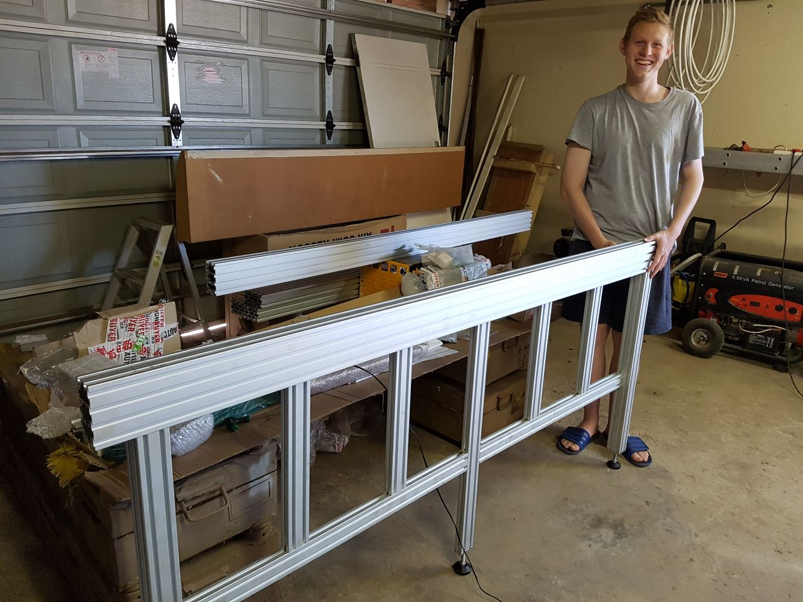
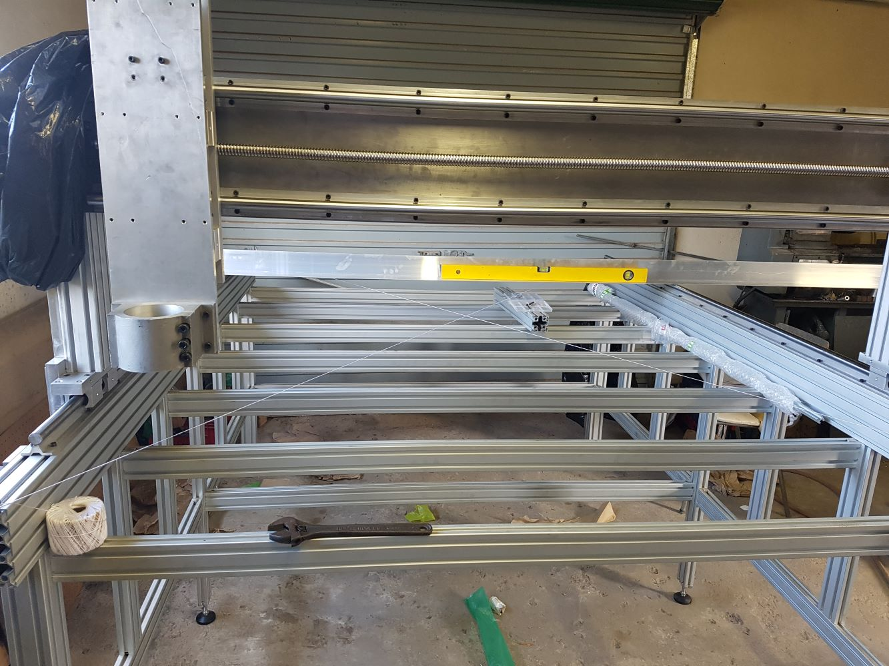

MyCNC - The Build
Sourcing
Utilizing local engineering companies to manufacture the aluminium plates for the X and Y axis of the gantry and Z axis can be an excellent way to ensure the quality of the components while supporting local businesses. The first step is to identify engineering companies in your area that specialize in the manufacturing of precision parts and have experience with CNC machining. Once you have identified potential companies, it is important to provide them with detailed specifications and drawings of the required parts, as well as any necessary materials. Working with local engineering companies can provide several benefits, including the ability to visit the manufacturing facility to inspect the progress and quality of the parts as they are being made. This can help identify any potential issues early on, allowing for adjustments to be made before completion. Additionally, local companies may be able to offer personalized service, including consultation on design modifications or material selection. Overall, utilizing local engineering companies to manufacture precision parts for your CNC can be an effective way to ensure the quality of the components while supporting local businesses. By working closely with these companies and providing detailed specifications, you can ensure that the parts meet your exact needs and specifications.
Assembly
After selecting the best design and components for your CNC, the next step is to start building it. This involves assembling the frame, installing the motors and electronics, and wiring the machine. Following the detailed instructions provided by your chosen resources is key to ensuring that the CNC is built correctly, and functions as intended.
